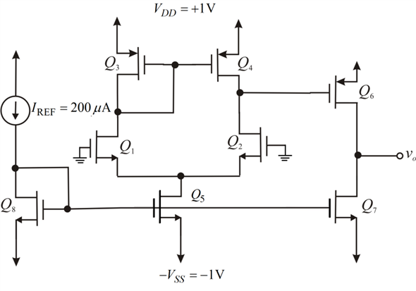

The overdrive voltage is,
The drain currents for are ,
The drain current for is 
Consider the expression.
Therefore,
Refer to Figure P8.108 in the text book.
CMOS fabricated in a technology.
We have,
The transconductance parameter is
The threshold voltage is, .
(a)
If terminals are grounded, then the circuit becomes as shown in Figure 1.

Figure 1
The overdrive voltage is,
The drain currents for are ,
The drain current for is
Consider the expression.
Therefore,
Form the circuit shown in Figure 1, it is clear that is,
Substitute for in equation.
Therefore, the value of is .
The drain current for MOSFET is,
The width-to-length ratio for can be obtained from the drain current.
Substitute ,  and
and  in equation.
in equation.
Therefore, the value of is  .
.
Substitute,  and in equation.
and in equation.
Therefore, the value of is  .
.
The width-to-length ratio for can be obtained from the drain current.
Substitute ,  and
and  in equation.
in equation.
Therefore, the value of is  .
.
The width-to-length ratio for can be obtained from the drain current
Substitute , and  in equation.
in equation.
Therefore, the value of is  .
.
The width-to-length ratio for can be obtained from the drain current.

Substitute, and  in equation.
in equation.
Therefore, the value of is  .
.
The width-to-length ratio for can be obtained from the drain current
Substitute , and  in equation.
in equation.
Therefore, the value of is  .
.
Substitute  ,
,  and
and  in equation.
in equation.
Therefore, the value of is  .
.
The width-to-length ratio for can be obtained from the drain current
Substitute , and in equation.
Therefore, the value of is  .
.
The tabular form for each transistor width-to-length ratio is shown in table 1.
The dc output voltage ideally zero.
(b)
The lowest value of input common-mode voltage is determined by the need to allow for sufficient voltage across the.
The lowest value of input common-mode voltage is,
Therefore, the lowest value of input common-mode voltage is .
The maximum voltage is that at which the transistor  leaves the saturation region.
leaves the saturation region.
Therefore, the maximum voltage is
Therefore, the input common-mode voltage is .
(c)
The highest input voltage is the voltage at which the transistor leaves
the saturation region.
The highest output voltage is
.
The lowest output voltage is
Therefore, the output voltage range is .
Consider the early voltage is .
If , then the voltage gain becomes
The expression considered for the gain in this case is given by.
Therefore, the voltage gain is .